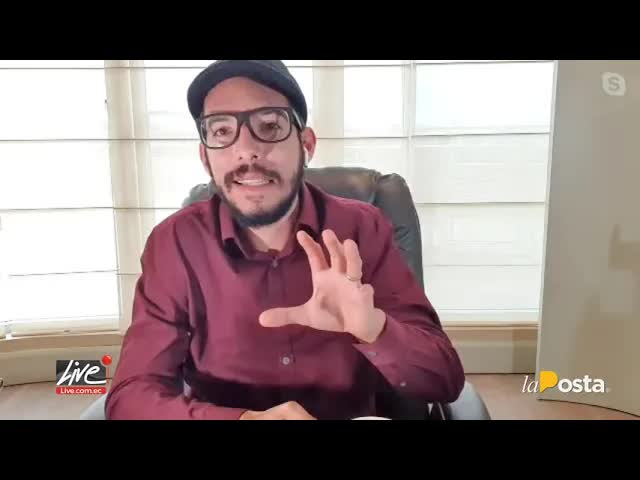
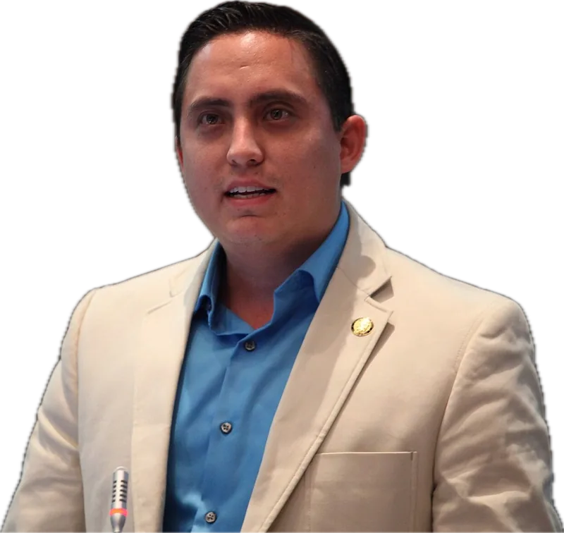
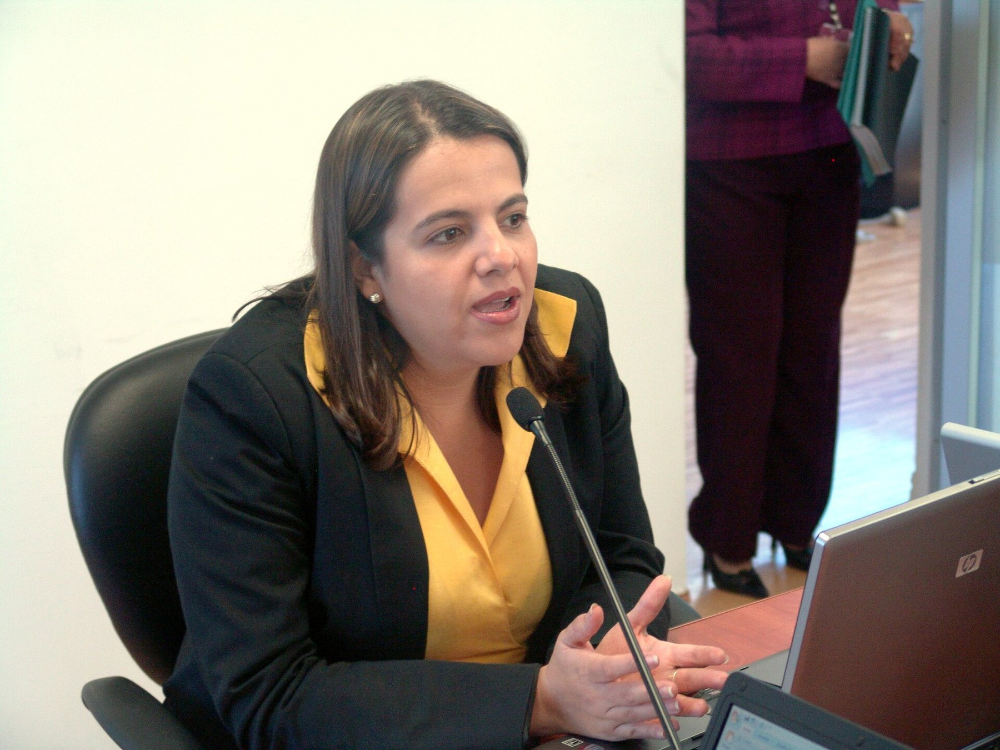
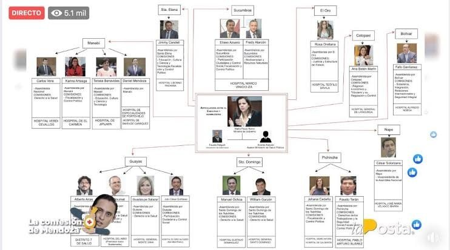
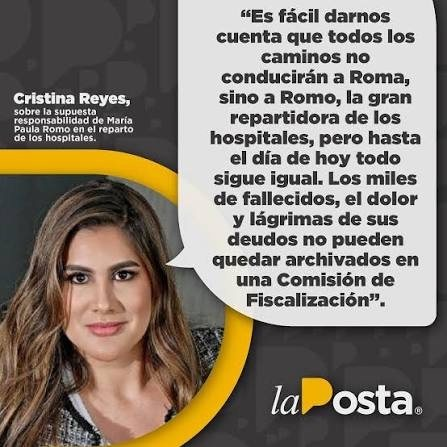
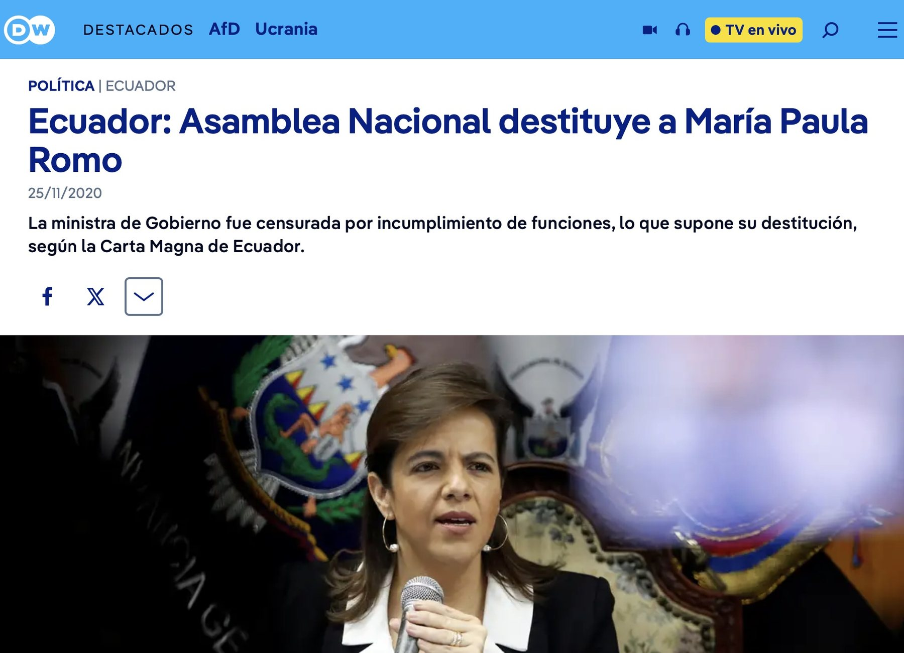
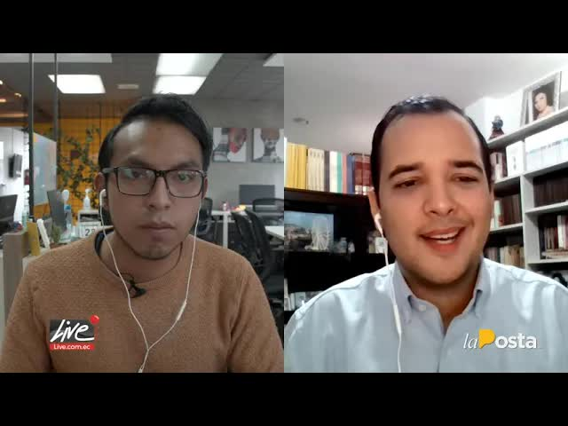

Café · Roberto Gómez, the lawmaker bringing the impeachment
Daniel Mendoza, an assembly member jailed over the Pedernales hospital, handed the Attorney General's Office a drawing: an organizational chart with the government minister at the center and the country's hospitals divided among legislators in exchange for votes. La Posta put it on the air. The next day the National Assembly censured Mendoza and called for María Paula Romo's head. Three months later it removed her from office.

Daniel Mendoza was an assembly member for Manabí and chaired the Oversight Committee until the Attorney General's Office charged him, in May 2020, over the basic hospital in Pedernales: a project he himself had pushed after the 2016 earthquake and that was never built. According to prosecutors, he and a group of operators set up a structure to steer public contracting and pocket the money; part of it ended up in his political movement, Mejor. Jailed in the middle of the pandemic, Mendoza chose to cooperate. Among what he handed over was a diagram.
The chart placed government minister María Paula Romo at the center, surrounded by assembly members from Alianza País and independent blocs, and divided hospitals and slices of the public administration as political quotas. The Pedernales hospital for Mendoza. The Manabí traffic directorate, which according to him took in 2,500 dollars a day. The Manabí governorship for Tito Nilton. Each hospital was a vote in the National Assembly, where Lenín Moreno's government had no majority. On August 26, 2020, La Posta broadcast it on Café La Posta.

The chats came out with the diagram. Mendoza asks the minister for a post for a person he calls Karen. Romo replies in a few words: Done. Karen's in. In another message Mendoza suggests Tito Nilton for the Manabí governorship and sends his number and his résumé. Nilton became governor.

AnnexDone. Karen's in.
Reply attributed to María Paula Romo in the chats with Daniel Mendoza
I'm asking you for a post for Karen.
Done. Karen's in.
I suggest Tito Nilton for the Manabí governorship. I'm sending you his number and his résumé.
The reaction was immediate. On August 27, 2020, the National Assembly censured Mendoza with 123 votes and, in the same resolution, demanded that President Moreno remove Romo for having taken name suggestions from a person under investigation. Roberto Gómez, of CREO, came on Café La Posta that morning as one of the lawmakers bringing the impeachment. Romo acknowledged the chats, said they were not evidence and denied handing out hospitals, either directly, through Mendoza or in agreement with him. Mendoza's lawyer said the carve-up was the journalists' inference. Mendoza later said he never drew a diagram.
On October 22, 2020, Roberto Gómez and Amapola Naranjo filed, with 45 signatures, the fourth impeachment request against Romo, this time over the carve-up. Mendoza testified that the minister assured him Nilton would be appointed once the impeachment proceedings against her were shelved, and that go-betweens such as Fausto Holguín brokered quotas among legislators. Gómez also presented an audio recording about interference by a Romo relative at the Tulcán hospital. Romo appeared before the Assembly on October 31.

What was said about the hospital carve-up when the National Assembly questioned the minister.
In the same resolution in which it censured Daniel Mendoza with 123 votes, the full Assembly demanded that President Moreno remove the minister for having taken name suggestions from a person under investigation.
Roberto Gómez and Amapola Naranjo filed the impeachment request with 45 signatures.
That the minister assured him Tito Nilton would be appointed governor once the impeachment proceedings against her were shelved, and that go-betweens such as Fausto Holguín brokered quotas among legislators.
Gómez also presented an audio recording about interference by a Romo relative at the Tulcán hospital.
Romo acknowledged the chats, said they were not evidence and denied handing out hospitals: not directly, not through Mendoza, not in agreement with him.
The full Assembly censured and removed her with 104 votes in the parallel impeachment trial over the expired tear gas used during the October 2019 national strike. The impeachment over the carve-up was left open and unresolved.
In March 2024, after the Metástasis case was made public, Romo said that in 2020 she had been unfairly accused of what others were doing, stealing from hospitals, and that Andersson Boscán and La Posta led the attacks against her.
Her removal came by another route. On November 24, 2020, the full Assembly censured and removed her with 104 votes in the parallel impeachment trial over the expired tear gas used against protesters during the October 2019 national strike. She was the first government minister removed by the National Assembly in that term. The impeachment over the carve-up was left open and unresolved.
Mendoza paid for Pedernales. On November 9, 2020, he accepted a plea deal and was sentenced to four years and two months in prison for organized crime; his adviser Jean Carlos Benavides, former Secob director René Tamayo and two others received two years and ten months. In June 2021 judges rejected the appeals of Mendoza and seven other defendants. In November 2021 Benavides, Franklin Calderón and José Véliz received six more years for money laundering. Mendoza served his last fourteen months under a semi-open regime.

No one was prosecuted over the carve-up. The Attorney General's Office never opened a case file under that name, and the chart remained a document in an impeachment trial that the Assembly itself let die when it removed Romo for another reason. Karen and Tito Nilton did not respond. Romo left the government and returned to politics as a lawyer and commentator. In March 2024, when the Attorney General's Office made the Metástasis case public, she said she had been unfairly accused of what others were doing, stealing from hospitals, and that Andersson Boscán and La Posta led the attacks against her.
The minister was right about one thing: the hospital corruption of 2020 was much bigger than a diagram. Daniel Salcedo, the operator behind overpriced purchases at Social Security hospitals, tried to flee in a light aircraft in July 2020, was captured, and years later his phone gave rise to the Metástasis case. Mendoza's chart was the first time anyone had drawn the political machinery behind it.
Updated September 5, 2026
The Attorney General's Office charges him over the Pedernales hospital. He is jailed.
La Posta broadcasts the diagram and the chats with Romo.
123 votes. The National Assembly asks Moreno to remove Romo.
Gómez and Naranjo file 45 signatures over the carve-up.
She acknowledges the chats and denies the carve-up.
Four years and two months for organized crime, under a plea deal.
104 votes, over the tear gas of October 2019.
Mendoza's sentence becomes final.
Benavides, Calderón and Véliz: six more years.
After Metástasis, she says she was accused of what others were doing.
Government minister.
Assembly member for Manabí, prosecuted over the Pedernales hospital.
Suggested by Mendoza in a chat.
Assembly member who brought the impeachment.
Photos via Wikimedia Commons. María Paula Romo: Ministerio Interior Ecuador (PDM-owner).
She acknowledged the chats with Mendoza but said they were not evidence and denied handing out hospitals as a political quota.
"Everything the journalists say about carving up hospitals and posts is their own inference." Mendoza later said he never drew a diagram.
In its resolution censuring Mendoza, it demanded that the president remove the minister.
After the Metástasis case was made public, she said that in 2020 she had been unfairly accused of what others were doing, stealing from hospitals, and that Andersson Boscán and La Posta led the attacks against her.


the issue he told me he wants to do this part of the of the commercial mentions I tell him the issue there you have the phone number 7 your own is because while I give him he said mine we start the show well today's special show we're going to do a long review of the latest events some things have happened you'll have heard something about the world about an area paula romo you'll have…
Read the full transcripthad said today we're making a small change because of everything that happened last night on the floor of the assembly so my first guest is assembly member héctor yepes assembly member thank you very much for taking this call very good morning how are you very good morning assembly member to the point yesterday the assembly really surprised because of because of what happened and boy was it the excitement that you presented your first…
Read the full transcriptmobility friends of the with all of you very good sandwiches for me it's a pleasure to be able to join you in a new edition of café la posta your favorite interview show to also analyze the national situation we are living through and that we live day to day so for me it's a pleasure and a joy to be able to join you decisive day decisive day today because of everything to do with the tri…
Read the full transcriptTranscripts from each show's automatic captions. They have not been corrected by hand: use them to find a phrase and jump to the exact minute in the video, not as verbatim quotes.
Removed over the tear gas. The impeachment over the carve-up was never put to a vote.
Mendoza and his operators were convicted over the ghost hospital. The chart did not lead to a single prosecution.
The relationship map reproduces what appears in the chart, the chats and the public statements cited. The original video of the revelation, which is not on La Posta's public channel, has yet to be added.